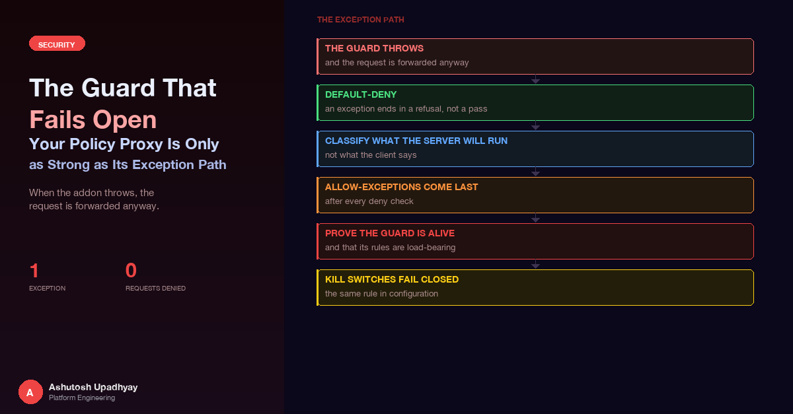

When a mitmproxy addon throws, the request is forwarded anyway. How to make a guard default-deny, classify what the server will run, place allow-exceptions after every deny check, and make config kill switches fail closed.
The review question that mattered was not "does the guard block mutations?" It did. It had a long test suite proving so. The question was "what does the guard do when its own code throws?"
The guard in question is an intercepting proxy that sits in front of a shared test environment with a GraphQL API. Automated browser tests go through it. Its job is to forward reads and drop anything that could change state, because that one environment is shared by many test runs. It is written as an addon for mitmproxy: a class with hooks that mitmproxy calls for each request, each CONNECT, each WebSocket message.
While reviewing it, the reviewer read the mitmproxy source to see what happens around those hooks. The finding: an exception in a hook does not stop the request. mitmproxy catches it, logs an addon error, and carries on, so the request is forwarded. Two days later a different bug in the same guard made the same point from the other direction: a newly added "allow this one safe query" exception let a mutation ride along with it, and every test in the suite stayed green.
This post is about both. A guard is judged by its exception path and its exceptions-to-the-rule path, not by the happy path its tests exercise. It ends with the same lesson applied to something much more mundane: a kill switch in a config file.
The one-sentence version. A guard that is built to block should be written so that forwarding is something the code has to earn on every request, and anything unexpected (a thrown exception, an unreadable body, a parser disagreement) leaves it in the default state, which is blocked.
mitmproxy dispatches each event to each addon through a helper called safecall in its addon manager. As the reviewer read the source, that helper catches Exception, logs an "Addon error" message, and returns. The dispatcher wraps every hook in it. This was checked against the library's source on its main branch at the time of the review, and it is the behaviour to design around. In sketch form (my paraphrase, not the library's code):
# What the framework does around each of your hooks, in spirit
def safecall(hook, *args):
try:
return hook(*args)
except Exception:
log.error("Addon error") # then carry on
# nothing here stops the requestThat is a sensible default for a logging addon or a header rewriter: one buggy addon should not take down the proxy. For a policy addon it is exactly backwards. If the hook raises, the request has not been judged, and the framework forwards unjudged requests.
It also changes which inputs matter. The requests that make a guard throw are the unusual ones. For a GraphQL guard those are things like:
None when the hook reads it;Those are also exactly the inputs a person probing for a gap would send. The unusual requests are the ones a guard most needs to catch, and under a fail-open framework they are the ones that pass.
Where else this shape appears. Anything with a "catch, log, continue" wrapper around your policy code has the same property: middleware chains, plugin hosts, webhook dispatchers, admission-style hooks with a permissive failure policy. If you do not know what the host does when your handler raises, find out before you rely on the handler to deny. The broader argument for limiting what an agent can reach in the first place is in post 6; this post is about making the enforcement point itself hold up.
The fix is to invert who has to do something. Instead of "block if the policy says deny", the hook is written as "block unless the policy explicitly said allow, and that decision is made in a finally block so nothing can skip it":
def request(self, flow):
allowed = False # the default is DENY
try:
decision = classify(flow) # may raise, may return early
log_decision(decision)
if decision.allow:
allowed = True # the ONLY place this becomes True
except Exception as exc:
# class name only: never str(exc), never bodies, headers or values
log_exception_only(type(exc).__name__)
finally:
if not allowed:
flow.response = make_response(403, b"Blocked")Three details carry the weight.
The flag is set in exactly one place. Every other path, including the early return for a body that could not be read, falls through finally with the flag still false, and the request is answered by the guard with its own 403 instead of being forwarded. A bug that raises, a bug that returns early, and a legitimate deny all end the same way.
Every hook gets the same treatment. The guard applies it to the CONNECT hook (a tunnel is only opened to a host and port on the allowed list), to the request hook, and to the WebSocket hook, where the equivalent of killing the flow is dropping the message. Raw TCP and UDP flows are killed outright, because a protocol the guard cannot read is a protocol it cannot judge.
Logging cannot be allowed to prevent the block. In the hook that has to disable streaming (below), the code kills the flow first and only then tries to log, with the log call in its own try. The comment on that line says why: logging must not be able to prevent it. And when an exception is logged, only its class name and which listener it came from are written. An exception message can contain a fragment of the request, and a guard's log is a place that people read and ship around.
A guard that reads the body one way while the server reads it another is not guarding anything. Most of the code in the guard, once the default-deny skeleton is in place, exists to close those gaps by refusing anything it cannot read unambiguously.
| Where the guard and the server could disagree | What the guard does |
|---|---|
| Streaming. With request streaming on, the proxy starts sending a large body upstream before the request hook has seen it all, and the hook sees an empty body. | Streaming is switched off per request, in the headers hook, before any body arrives. If that cannot be set, the request is killed. The guard also refuses to start at all if the global large-body streaming option is set, and re-checks that option every time options change. |
Content encoding. A server may decode br, zstd, stacked encodings or sloppy gzip differently from the guard. |
Only no encoding, or a single strict gzip member, is accepted, decoded with a hard output cap so a small compressed body cannot expand into memory. Everything else, including trailing bytes after the gzip member and truncated streams, is dropped. |
Duplicate or case-variant JSON keys. Two query keys, or query and Query: which one wins depends on the server. |
The JSON loader rejects, at any depth, a repeated key or two keys equal after case folding. A top-level key that is a case variant of a known payload key is rejected too. |
| Ambiguous documents. A GraphQL document that repeats a fragment name, repeats an operation name, or mixes an anonymous operation with others. | Refused rather than interpreted. Which definition applies is server-specific (first wins, last wins, or error), so reading it one way would be a guess. |
| Pathological documents. Deep nesting, or fragments that expand into millions of nodes. | One walk budget per document. Exceeding it, or hitting the recursion limit, makes the document unparseable, and unparseable means dropped. |
| Requests that name a stored query by hash instead of sending its text. | The guard cannot see what will run, so they are dropped unless the hash maps to text the guard already holds. |
Notice the common move. In every row the guard does not try to be clever about the odd input. It declines to guess and drops. A dropped legitimate request costs a failing test and a conversation. A mis-read illegitimate one costs the thing the guard was installed to protect.
The decoder deserves one more sentence, because it illustrates the order of operations: the bound is applied while decompressing, not after. A guard that fully decompresses first and checks the size second has handed the sender a way to exhaust the guard's memory.
The obvious shortcut for a GraphQL guard is to look at operationName. It is a field in the JSON body, it is right there, and well-behaved clients set it to something descriptive. It is also entirely chosen by the sender and has nothing to do with what the server executes:
{
"operationName": "ListWidgets",
"query": "mutation ListWidgets { purgeWidgets { count } }"
}An allowlist keyed on ListWidgets would wave that through. The rule the guard follows is: parse the document, then classify on what the parse says.
{ ok: purgeWidgets } is a call to purgeWidgets. The walker expands fragment spreads and inline fragments so a root field cannot hide inside one.A sketch of the shape of the classifier:
def classify_payloads(payloads):
parsed = []
for p in payloads: # one item, or a whole batch
r = parse_document(p) # None if anything is off
if r is None:
return DENY("unparseable") # one bad item drops the batch
parsed.append(r)
is_mutation = any(r.is_mutation for r in parsed)
root_fields = [f for r in parsed for f in r.root_fields] # real names
if is_mutation and not root_fields:
return DENY("empty_mutation")
if is_mutation:
for f in root_fields: # every root field must pass
if never_allowed(f) or f not in ALLOWLIST:
return DENY("not_allowed:" + f)
return ALLOW("allowlisted_mutation")
return ALLOW("query")The mutation branch is a loop that must pass for every field. "At least one field is on the list" is the version that fails.
The second review finding was not a framework behaviour. It was a change written for a perfectly reasonable reason.
In the strictest configuration, the guard drops queries for a set of user-data root fields, so test runs cannot read user data outside their own. A test needed one narrow exception: a user may look up their own record by id. A coding agent implemented it, and it did what the ticket said. But it was written as an early return, return ALLOW as soon as the own-id lookup was recognised, placed before the strict configuration's other rules ran.
My own probe combined the allowed lookup with a mutation in one document:
mutation {
lookupSelf(id: "OWN-ID") { id } # the allowed exception
purgeWidgets { count } # the thing the guard exists to stop
}The exception fired on the first field and the whole document was allowed. The agent's test suite passed completely. Every test of the exception exercised the exception alone; none combined it with a mutation, so nothing in the suite was capable of failing on this case.
The rule that came out of it. An allow-exception is not a shortcut around the rules. It lives inside the branch for its configuration, after every deny check (the mutation checks, the never-allow list, the operation-type checks), and it narrows exactly one specific deny reason: this lookup, with this argument, resolving to this caller's own id. Nothing else turns a deny into an allow because an exception happens to be satisfied.
In today's code the shape is visible in the structure. The mutation check runs first and returns. The exception only exists in the branch that handles queries that were about to be denied for one reason, and it requires that the operation type is exactly a query, that the one blocked root is the lookup in question, and that every occurrence of its argument resolves to the caller's own id. A subscription or a mixed document never reaches it.
When you write or review an exception, probe it with the inputs that attack the assumption it relies on:
Two habits turn "I believe it blocks" into something checkable.
A positive control. The guard has a canary request that must be dropped in every configuration, even when its root fields would otherwise be allowed, and the test harness sends it and requires that the log shows it dropped. Silence is the problem a canary solves. A guard that is not running, is misrouted, or has quietly started forwarding everything looks identical in a log to a guard with nothing to block, until you ask it to block something you know it should. The same applies to the other dropped cases: the point of logging a decision reason for each drop (unparseable, over the size cap, unsupported encoding, not buffered) is that a drop is attributable to a cause.
Rules that name their own tests. Many of the guard's checks carry a one-line comment in the form "FAIL if this is removed, this test goes red", and a mutation script removes each check in turn and requires the named test to fail (the traps that make such scripts lie are in the post on tests that cannot fail).
The fail-closed path itself has a test: one deliberately makes the classifier raise and asserts the request is killed. A fault-injection switch that makes a hook raise on a chosen request exists for the same reason, and it is itself refused unless an explicit test gate is on, so it cannot become a way to alter behaviour in a real run.
What each layer proves. Default-deny makes errors safe. Strict parsing makes disagreements into drops. Parsed classification makes the client's labels irrelevant. Exceptions placed after the deny checks keep convenience from becoming bypass. The canary proves the guard is in the path. The mutation script proves the tests would notice if any of that were removed.
The same inversion shows up one level up, in how a service reads its settings, and the failure mode there is just as quiet.
In one agent platform, every process builds the same settings object from one shared config source: the API, the sub-agents, and the scheduled jobs. So a new settings group is imported by all of them. That drives two rules that pull in opposite directions.
Tunables are lenient. A strict validator on a new numeric field turns one typo into a crash of every process that imports it, including jobs nobody is watching. A timeout written as "65s" instead of 65 should not take down a scheduled digest. So numeric and string tunables use a "before" validator that logs a warning (naming the setting and the value, cut to 64 characters) and returns the code default. Timeouts and caps must be greater than zero; a retry count may be zero.
Kill switches are the opposite. A boolean that turns a tool on or off must fail closed. The validator accepts true/false/1/0/yes/no/on/off, case-insensitive. Anything else, such as the typo flase, or an empty string, logs a warning and returns off:
TRUE_WORDS = {"true", "1", "yes", "on"}
FALSE_WORDS = {"false", "0", "no", "off"}
def kill_switch(name, value):
if isinstance(value, bool):
return value
word = str(value).strip().lower()
if word in TRUE_WORDS:
return True
if word in FALSE_WORDS:
return False
log.warning("%s=%r is not a valid boolean; failing closed (switched OFF)",
name, str(value)[:64])
return False # deliberately NOT the code default, which is TrueThe last line is the point. For an ordinary tunable the fallback to the code default is the safe choice. For a switch whose default is "on", falling back to the default means a mistyped value leaves the tool running, which is the one outcome the person typing "flase" did not want. The tool then answers with a clear "switched off" message, and the operator fixes the value.
Two follow-through habits come from the same review:
The guard already drops what it cannot read. The next thing I want is evidence about how well "what the guard reads" matches "what the server runs", measured rather than argued.
The idea is a differential harness. Generate documents from a small grammar of deliberately awkward shapes: aliases, nested fragments, repeated names, batches, odd encodings, mixed operation types. Send each one two ways: through the guard's parser, and to a disposable copy of the GraphQL server running with its own request logging switched on. For each document, compare the set of root fields the guard says it saw with the set the server actually executed. Any document where the two sets differ is a candidate disagreement, and each one gets added to a corpus with the expected decision, the way the allowlist parser already has a directory of accepted and rejected sample files. Because the corpus only grows, every new bypass idea ends up as a permanent test, and the mutation script can then check that the rule that handles it is load-bearing.
try/finally with an allowed = False default that only one explicit path sets to true. Raise, return early, or deny, and the result is the same: blocked.Disclaimer: The views and opinions expressed in this post are my own and do not represent those of my employer or any organisation I am associated with.